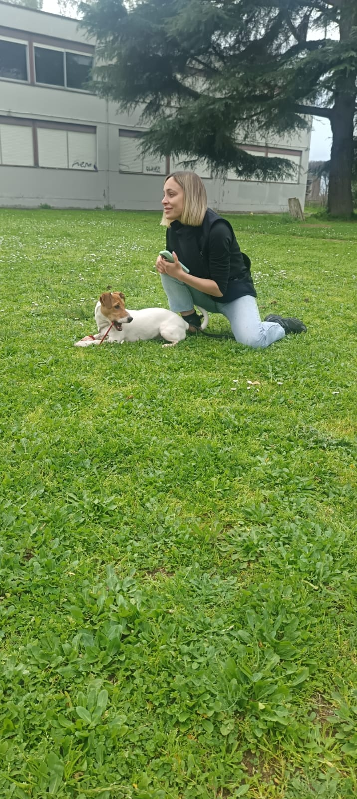
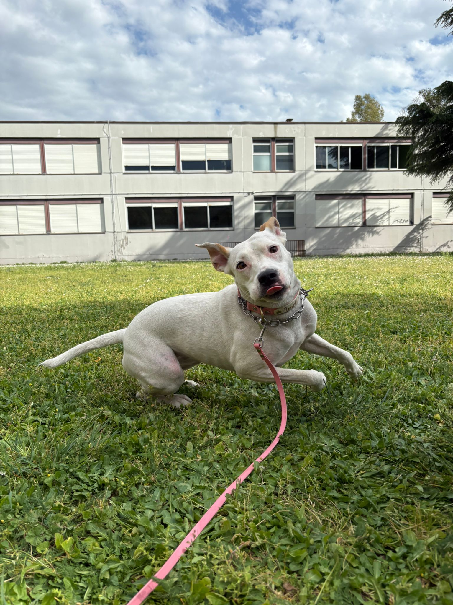

Educazione e Recupero Comportamentale
Equilibrio.
Fiducia.
Collaborazione.
Costruire relazione significa imparare a comunicare. Ogni cane ha una mente, un carattere e capacità da valorizzare.
Si impara tutto con il gioco (e a volte il cibo),
ma niente viene fatto per gioco.
ma niente viene fatto per gioco.

